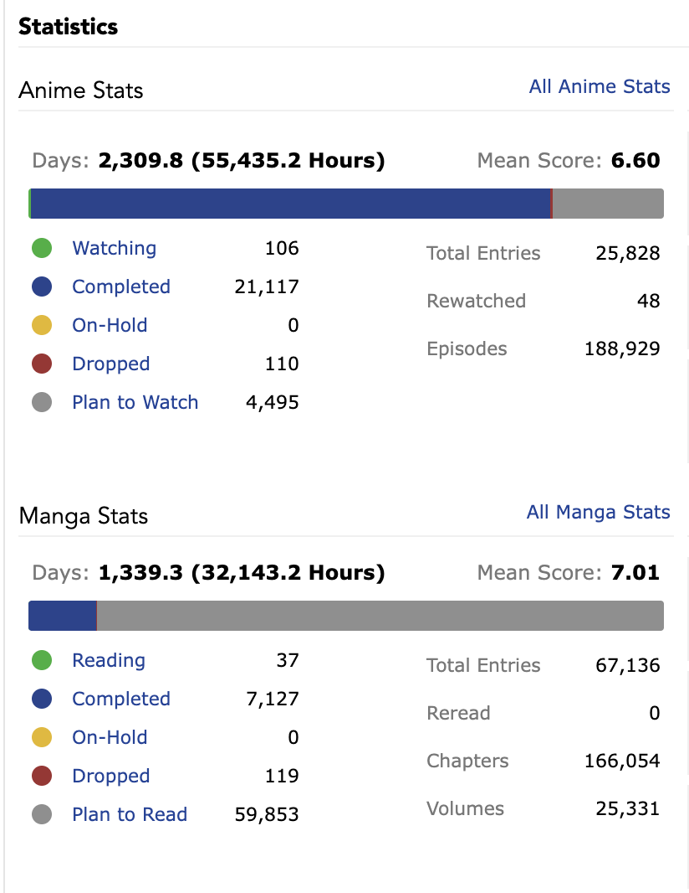
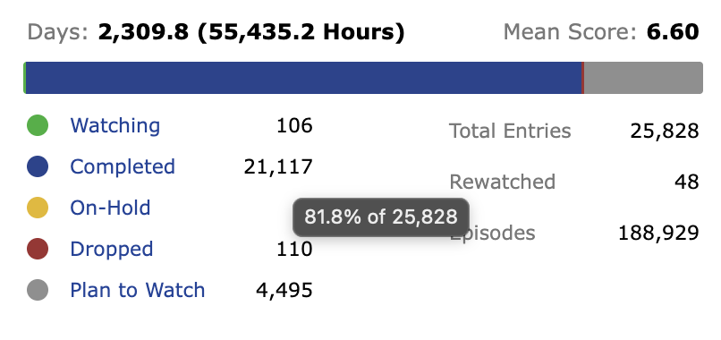
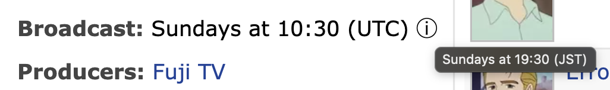
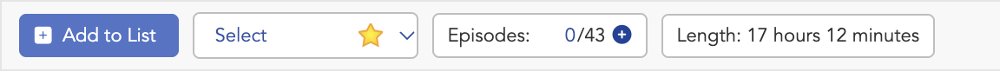
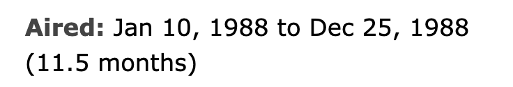

MAL Pal
A Chromium and Firefox extension to enhance your MyAnimeList experience. View watch hours, category percentages, local broadcast times, watch lengths, account ages, and airing durations directly on MAL pages, with every feature toggleable from the extension pop-up.
Below is what the MAL Pal's pop-up looks like. Click any option to see a preview of what it does :)
Show Hours on Profile
Displays total Anime and Manga hours next to the 'Days' stat on user profiles

Show Category Percentage Tooltips
Hover over any status count (e.g., Completed, Watching) on a profile to see its percentage of total entries

View Local Time for Broadcasts
See the broadcasting time for any Anime in your local time in the Information Panel (hover for original JST time)

View Watch Time Length
View how long it will take to finish an anime. Watch length will be besides the episode counter on Anime pages

Show Watch Time in History
Displays the estimated time spent watching or reading next to each day in a user's history
Show Account Age in Years
Displays how many years ago a user created their account next to their join date
Show Airing Run Duration
See how long an anime has been airing (or aired) next to its Aired date in the Information Panel
